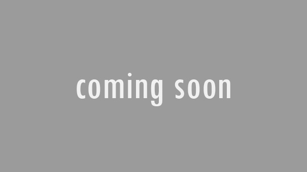

Recente projecten



l
Software developer
Mijn naam is Dylan Hendrix
en ik ben een software developer
die studeert aan Sint Lucas in Eindhoven, Nederland.
het begon allemaal toen ik niet wist wat ik wilde studeren,
maar heb uiteindelijk gekozen voor software development en
ik ben nogsteeeds heel blij met die keuze.
zoals ik al zei studeer ik software development,
waar de main focus naar game development gaat.
ik ben gedreven om mijn kennis en skills
te verbeteren om uiteindelijk een proffesionele developer te worden.
Ik vind het leuk om te voetballen, naar de gym gaan en met vrienden zijn.
heb je nou een creatief persoon nodig,
aarzel niet en stuur me een mail om te zien of we goed samen kunnen werken.